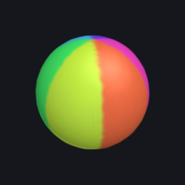

Sphere
A sphere from two angles, u around and v from pole to pole, spinning with u + t. Six stripes from floor(6u/(2pi)).
x = sin(v)cos(u + t)
y = cos(v)
z = sin(v)sin(u + t)
u = 0 .. 2pi
v = 0 .. pi
hue = floor(6u/(2pi))/6 + 0.04
size = 0.035
count = 7000